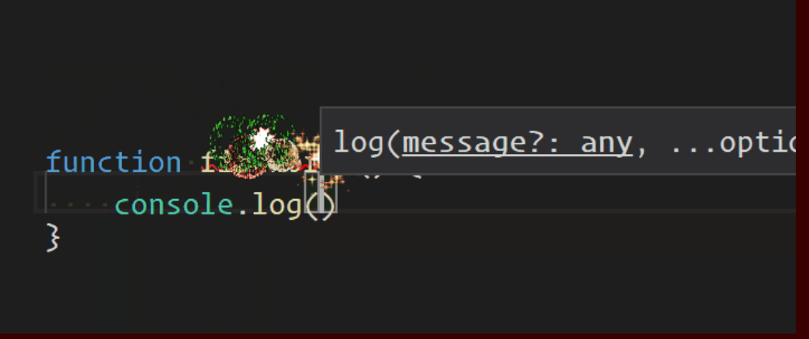
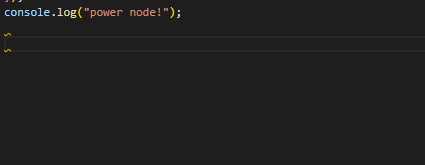

<!DOCTYPE html>


<html lang="zh-CN">


<head>
  <meta charset="utf-8" />
   
  <meta name="keywords" content="翟天野 天野 翟天野博客 tianye zhaitianye" />
   
  <meta name="description" content="The seeker of the world" />
  
  <meta name="viewport" content="width=device-width, initial-scale=1, maximum-scale=1" />
  <title>
    vscode插件-Power Mode |  Tianye Blog
  </title>
  <meta name="generator" content="hexo-theme-ayer">
  
  <link rel="shortcut icon" href="/favicon.ico" />
  
  
<link rel="stylesheet" href="/dist/main.css">

  
<link rel="stylesheet" href="/comm/remixicon.min.css">

  
<link rel="stylesheet" href="/css/custom.css">

  
  
<script src="/comm/pace.min.js"></script>

  
  

  

</head>

</html>

<body>
  <div id="app">
    
      
      <canvas width="1777" height="841"
        style="position: fixed; left: 0px; top: 0px; z-index: 99999; pointer-events: none;"></canvas>
      
    <main class="content on">
      <section class="outer">
  <article
  id="post-vscode插件-Power Mode"
  class="article article-type-post"
  itemscope
  itemprop="blogPost"
  data-scroll-reveal
>
  <div class="article-inner">
    
    <header class="article-header">
       
<h1 class="article-title sea-center" style="border-left:0" itemprop="name">
  vscode插件-Power Mode
</h1>
 

    </header>
     
    <div class="article-meta">
      <a href="/2019/11/vscode%E6%8F%92%E4%BB%B6-Power%20Mode/" class="article-date">
  <time datetime="2019-11-30T12:40:11.000Z" itemprop="datePublished">2019-11-30</time>
</a> 
  <div class="article-category">
    <a class="article-category-link" href="/categories/vscode/">vscode</a>
  </div>
  
<div class="word_count">
    <span class="post-time">
        <span class="post-meta-item-icon">
            <i class="ri-quill-pen-line"></i>
            <span class="post-meta-item-text"> 字数统计:</span>
            <span class="post-count">711</span>
        </span>
    </span>

    <span class="post-time">
        &nbsp; | &nbsp;
        <span class="post-meta-item-icon">
            <i class="ri-book-open-line"></i>
            <span class="post-meta-item-text"> 阅读时长≈</span>
            <span class="post-count">2 分钟</span>
        </span>
    </span>
</div>
 
    </div>
      
    <div class="tocbot"></div>


  
    <div class="article-entry" itemprop="articleBody">
       
  <h2 id="Power-Mode"><a href="#Power-Mode" class="headerlink" title="Power Mode"></a>Power Mode</h2><blockquote>
<p>推荐一款vscode特效插件给大家使用</p>
</blockquote>


<p></p>
<p>基础使用步骤</p>
<ol>
<li>扩展&gt;搜索Power Mode,安装并重新启动VSCode</li>
<li>打开编译器左下角的配置的图标，</li>
<li>选择设置，直接打开右上角的三个点，选择打开setting.json</li>
<li>将以下代码拷贝进去并保存</li>
</ol>
<figure class="highlight js"><table><tr><td class="gutter"><pre><span class="line">1</span><br><span class="line">2</span><br><span class="line">3</span><br><span class="line">4</span><br><span class="line">5</span><br><span class="line">6</span><br><span class="line">7</span><br><span class="line">8</span><br><span class="line">9</span><br></pre></td><td class="code"><pre><span class="line"><span class="comment">//powser mode   </span></span><br><span class="line"><span class="string">"powermode.enabled"</span>: <span class="literal">true</span>,</span><br><span class="line"><span class="comment">//样式</span></span><br><span class="line"><span class="string">"powermode.presets"</span>: <span class="string">"particles"</span>,</span><br><span class="line"><span class="comment">// 时间间隔</span></span><br><span class="line"><span class="string">"powermode.comboTimeout"</span>:<span class="number">8</span>,</span><br><span class="line"><span class="comment">// 抖动</span></span><br><span class="line"><span class="string">"powermode.enableShake"</span>: <span class="literal">false</span>,</span><br><span class="line"><span class="string">"powermode.backgroundMode"</span>: <span class="string">"mask"</span>,</span><br></pre></td></tr></table></figure>

<ol start="5">
<li>保存，现在你会发现已经有效果了。下面是更完整的高级配置项说明。</li>
</ol>
<figure class="highlight js"><table><tr><td class="gutter"><pre><span class="line">1</span><br><span class="line">2</span><br><span class="line">3</span><br><span class="line">4</span><br><span class="line">5</span><br><span class="line">6</span><br><span class="line">7</span><br><span class="line">8</span><br><span class="line">9</span><br><span class="line">10</span><br><span class="line">11</span><br><span class="line">12</span><br><span class="line">13</span><br><span class="line">14</span><br><span class="line">15</span><br><span class="line">16</span><br><span class="line">17</span><br><span class="line">18</span><br><span class="line">19</span><br><span class="line">20</span><br><span class="line">21</span><br><span class="line">22</span><br><span class="line">23</span><br><span class="line">24</span><br><span class="line">25</span><br><span class="line">26</span><br><span class="line">27</span><br><span class="line">28</span><br><span class="line">29</span><br><span class="line">30</span><br><span class="line">31</span><br><span class="line">32</span><br><span class="line">33</span><br><span class="line">34</span><br><span class="line">35</span><br><span class="line">36</span><br><span class="line">37</span><br><span class="line">38</span><br></pre></td><td class="code"><pre><span class="line"><span class="comment">//影响用于显示GIF的CSS属性。“.”使用gif作为掩码，让背景通过（类似于原子功率模式），而“image”将显示实际的gif。</span></span><br><span class="line"><span class="string">"powermode.backgroundMode"</span>: <span class="string">"mask"</span>,</span><br><span class="line"><span class="comment">//激活激活模式所需的组合编号！！！！              </span></span><br><span class="line"><span class="string">"powermode.comboThreshold"</span>: <span class="number">0</span>,</span><br><span class="line"><span class="comment">//启用激活电源模式！！！！              </span></span><br><span class="line"><span class="string">"powermode.enabled"</span>: <span class="literal">false</span>,</span><br><span class="line"><span class="comment">//'重新启动'将重新启动GIF每次显示，“继续”将继续播放它从它的前一点              </span></span><br><span class="line"> <span class="string">"powermode.gifMode"</span>: <span class="string">"continue"</span>,</span><br><span class="line"><span class="comment">//使用背景图像的“url()”部分中可以放入的任何内容，例如base64编码的gif或绝对文件路径WITHOUT引号。URL必须是HTTPS。    </span></span><br><span class="line"><span class="string">"powermode.customExplosions"</span>: [],</span><br><span class="line"><span class="comment">//屏幕抖动的强度             </span></span><br><span class="line"><span class="string">"powermode.shakeIntensity"</span>: <span class="number">5</span>,</span><br><span class="line"><span class="comment">//设置为false以在键入时禁用爆炸             </span></span><br><span class="line"><span class="string">"powermode.enableExplosions"</span>: <span class="literal">true</span>,        </span><br><span class="line"><span class="comment">//设置为false以在键入时禁用抖动             </span></span><br><span class="line"><span class="string">"powermode.enableShake"</span>: <span class="literal">true</span>,           </span><br><span class="line"><span class="comment">//设置为false以禁用显示在状态栏中的组合             </span></span><br><span class="line"><span class="string">"powermode.enableStatusBarComboCounter"</span>: <span class="literal">true</span>,   </span><br><span class="line"><span class="comment">//组合重置前的秒数              </span></span><br><span class="line"><span class="string">"powermode.comboTimeout"</span>: <span class="number">10</span>,        </span><br><span class="line"><span class="comment">//确定爆炸持续多长时间（毫秒）。设置为0，它将永远持续下去。              </span></span><br><span class="line"><span class="string">"powermode.explosionDuration"</span>: <span class="number">1000</span>,  </span><br><span class="line"><span class="comment">//触发爆炸所需的击键次数。2意味着每一秒击键都会爆炸，1意味着每次击键。              </span></span><br><span class="line"><span class="string">"powermode.explosionFrequency"</span>: <span class="number">2</span>,         </span><br><span class="line"><span class="comment">//爆炸的垂直偏移。增加它将推动爆炸，减少它将使它们下降。              </span></span><br><span class="line"><span class="string">"powermode.explosionOffset"</span>: <span class="number">0.35</span>,     </span><br><span class="line"><span class="comment">//确定爆炸是如何循环的。随机（默认）从列表中随机选取。顺序“按顺序遍历列表，一个数字将在列表中选择基于（零）索引的爆炸。</span></span><br><span class="line"><span class="string">"powermode.explosionOrder"</span>: <span class="string">"random"</span>,</span><br><span class="line"><span class="comment">//爆炸的大小。对于值x，高度设置为x REM，宽度设置为xCH。             </span></span><br><span class="line"><span class="string">"powermode.explosionSize"</span>: <span class="number">6</span>,  </span><br><span class="line"><span class="comment">//设置适用于爆炸元素的自定义CSS。             </span></span><br><span class="line"><span class="string">"powermode.customCss"</span>: &#123;&#125;,</span><br><span class="line"><span class="comment">//同时爆炸的最大次数             </span></span><br><span class="line"><span class="string">"powermode.maxExplosions"</span>: <span class="number">1</span>,          </span><br><span class="line"><span class="comment">//在不同的预设GIFs之间选择使用PosikMod              </span></span><br><span class="line"><span class="string">"powermode.presets"</span>: <span class="string">"particles"</span>,           </span><br><span class="line"><span class="comment">//设置为false以禁用显示状态栏中的定时器</span></span><br><span class="line"><span class="string">"powermode.enableStatusBarComboTimer"</span>: <span class="literal">true</span></span><br></pre></td></tr></table></figure>

<h3 id="说明"><a href="#说明" class="headerlink" title="说明"></a>说明</h3><p>上面是Power Mode的一些扩展配置，你可以根据自己的喜好进行设置，如果你还是觉得不爽，想要更多炫酷的效果，那你可以再深入研究一下，Power Mode功能很强大。</p>
<p>基础的这些配置很炫了，建议基础功能就好，我觉得这个最简单的效果就用着很舒服，太复杂的效果容易影响我们的视线，不利于我们的写代码</p>
 
      <!-- reward -->
      
    </div>
    

    <!-- copyright -->
    
    <div class="declare">
      <ul class="post-copyright">
        <li>
          <i class="ri-copyright-line"></i>
          <strong>版权声明： </strong>
          本博客所有文章，未经许可，任何单位及个人不得做营利性使用！如有侵权请联系作者。
        </li>
      </ul>
    </div>
    
    <footer class="article-footer">
       
  <ul class="article-tag-list" itemprop="keywords"><li class="article-tag-list-item"><a class="article-tag-list-link" href="/tags/vscode/" rel="tag">vscode</a></li></ul>

    </footer>
  </div>

   
  <nav class="article-nav">
    
      <a href="/2019/11/vscode%E6%8F%92%E4%BB%B6-Todo%20Tree/" class="article-nav-link">
        <strong class="article-nav-caption">上一篇</strong>
        <div class="article-nav-title">
          
            vscode插件-Todo Tree
          
        </div>
      </a>
    
    
      <a href="/2019/11/hexo%E5%A2%9E%E5%8A%A0%E8%84%9A%E6%B3%A8%E5%8A%9F%E8%83%BD/" class="article-nav-link">
        <strong class="article-nav-caption">下一篇</strong>
        <div class="article-nav-title">hexo增加脚注功能</div>
      </a>
    
  </nav>

  
     
</article>

</section>
      <footer class="footer">
  <div class="outer">
    <ul>
      <li>
        Copyrights &copy;
        2015-2020
        <i class="ri-heart-fill heart_icon"></i> 翟天野
      </li>
    </ul>
    <ul>
      <li>
        
      </li>
    </ul>
    <ul>
      <li>
        
      </li>
    </ul>
    <ul>
      
    </ul>
    <ul>
      <li>
        <!-- cnzz统计 -->
        
      </li>
    </ul>
  </div>
</footer>
      <div class="float_btns">
        <div class="totop" id="totop">
  <i class="ri-arrow-up-line"></i>
</div>

<div class="todark" id="todark">
  <i class="ri-moon-line"></i>
</div>

      </div>
    </main>
    <aside class="sidebar on">
      <button class="navbar-toggle"></button>
<nav class="navbar">
  
  <div class="logo">
    <a href="/"></a>
  </div>
  
  <ul class="nav nav-main">
    
    <li class="nav-item">
      <a class="nav-item-link" href="/">主页</a>
    </li>
    
    <li class="nav-item">
      <a class="nav-item-link" href="/archives">归档</a>
    </li>
    
    <li class="nav-item">
      <a class="nav-item-link" href="/categories">分类</a>
    </li>
    
    <li class="nav-item">
      <a class="nav-item-link" href="/tags">标签</a>
    </li>
    
    <li class="nav-item">
      <a class="nav-item-link" href="/about">关于</a>
    </li>
    
  </ul>
</nav>
<nav class="navbar navbar-bottom">
  <ul class="nav">
    <li class="nav-item">
      
      
    </li>
  </ul>
</nav>
<div class="search-form-wrap">
  <div class="local-search local-search-plugin">
  <input type="search" id="local-search-input" class="local-search-input" placeholder="Search...">
  <div id="local-search-result" class="local-search-result"></div>
</div>
</div>
    </aside>
    <script>
      if (window.matchMedia("(max-width: 768px)").matches) {
        document.querySelector('.content').classList.remove('on');
        document.querySelector('.sidebar').classList.remove('on');
      }
    </script>
    <div id="mask"></div>

<!-- #reward -->
<div id="reward">
  <span class="close"><i class="ri-close-line"></i></span>
  <p class="reward-p"><i class="ri-cup-line"></i>请我喝杯咖啡吧~</p>
  <div class="reward-box">
    
    
  </div>
</div>
    
<script src="/js/jquery-2.0.3.min.js"></script>


<script src="/js/lazyload.min.js"></script>


<!-- Tocbot -->


<script src="/js/tocbot.min.js"></script>

<script>
  
  if(document.getElementsByClassName("tocbot").length !== 0){
    tocbot.init({
      tocSelector: '.tocbot',
      contentSelector: '.article-entry',
      headingSelector: 'h1, h2, h3, h4, h5, h6',
      hasInnerContainers: true,
      scrollSmooth: true,
      scrollContainer: 'main',
      positionFixedSelector: '.tocbot',
      positionFixedClass: 'is-position-fixed',
      fixedSidebarOffset: 'auto'
    });
  }
</script>

<script src="/comm/jquery.modal.min.js"></script>
<link rel="stylesheet" href="/comm/jquery.modal.min.css">
<script src="/comm/jquery.justifiedGallery.min.js"></script>

<script src="/dist/main.js"></script>

<!-- ImageViewer -->

<!-- Root element of PhotoSwipe. Must have class pswp. -->
<div class="pswp" tabindex="-1" role="dialog" aria-hidden="true">

    <!-- Background of PhotoSwipe. 
         It's a separate element as animating opacity is faster than rgba(). -->
    <div class="pswp__bg"></div>

    <!-- Slides wrapper with overflow:hidden. -->
    <div class="pswp__scroll-wrap">

        <!-- Container that holds slides. 
            PhotoSwipe keeps only 3 of them in the DOM to save memory.
            Don't modify these 3 pswp__item elements, data is added later on. -->
        <div class="pswp__container">
            <div class="pswp__item"></div>
            <div class="pswp__item"></div>
            <div class="pswp__item"></div>
        </div>

        <!-- Default (PhotoSwipeUI_Default) interface on top of sliding area. Can be changed. -->
        <div class="pswp__ui pswp__ui--hidden">

            <div class="pswp__top-bar">

                <!--  Controls are self-explanatory. Order can be changed. -->

                <div class="pswp__counter"></div>

                <button class="pswp__button pswp__button--close" title="Close (Esc)"></button>

                <button class="pswp__button pswp__button--share" style="display:none" title="Share"></button>

                <button class="pswp__button pswp__button--fs" title="Toggle fullscreen"></button>

                <button class="pswp__button pswp__button--zoom" title="Zoom in/out"></button>

                <!-- Preloader demo http://codepen.io/dimsemenov/pen/yyBWoR -->
                <!-- element will get class pswp__preloader--active when preloader is running -->
                <div class="pswp__preloader">
                    <div class="pswp__preloader__icn">
                        <div class="pswp__preloader__cut">
                            <div class="pswp__preloader__donut"></div>
                        </div>
                    </div>
                </div>
            </div>

            <div class="pswp__share-modal pswp__share-modal--hidden pswp__single-tap">
                <div class="pswp__share-tooltip"></div>
            </div>

            <button class="pswp__button pswp__button--arrow--left" title="Previous (arrow left)">
            </button>

            <button class="pswp__button pswp__button--arrow--right" title="Next (arrow right)">
            </button>

            <div class="pswp__caption">
                <div class="pswp__caption__center"></div>
            </div>

        </div>

    </div>

</div>

<link rel="stylesheet" href="/comm/photoswipe_dist/photoswipe.css">
<link rel="stylesheet" href="/comm/photoswipe_dist/default-skin/default-skin.css">
<script src="/comm/photoswipe_dist/photoswipe.min.js"></script>
<script src="/comm/photoswipe_dist/photoswipe-ui-default.min.js"></script>

<script>
    function viewer_init() {
        let pswpElement = document.querySelectorAll('.pswp')[0];
        let $imgArr = document.querySelectorAll(('.article-entry img:not(.reward-img)'))

        $imgArr.forEach(($em, i) => {
            $em.onclick = () => {
                // slider展开状态
                // todo: 这样不好，后面改成状态
                if (document.querySelector('.left-col.show')) return
                let items = []
                $imgArr.forEach(($em2, i2) => {
                    let img = $em2.getAttribute('data-idx', i2)
                    let src = $em2.getAttribute('data-target') || $em2.getAttribute('src')
                    let title = $em2.getAttribute('alt')
                    // 获得原图尺寸
                    const image = new Image()
                    image.src = src
                    items.push({
                        src: src,
                        w: image.width || $em2.width,
                        h: image.height || $em2.height,
                        title: title
                    })
                })
                var gallery = new PhotoSwipe(pswpElement, PhotoSwipeUI_Default, items, {
                    index: parseInt(i)
                });
                gallery.init()
            }
        })
    }
    viewer_init()
</script>

<!-- MathJax -->

<!-- Katex -->

<!-- busuanzi  -->

<!-- ClickLove -->

<!-- ClickBoom1 -->

<!-- ClickBoom2 -->


<script src="/js/clickBoom2.js"></script>


<!-- CodeCopy -->


<link rel="stylesheet" href="/css/clipboard.css">

<script src="/comm/clipboard.min.js"></script>
<script>
  function wait(callback, seconds) {
    var timelag = null;
    timelag = window.setTimeout(callback, seconds);
  }
  !function (e, t, a) {
    var initCopyCode = function(){
      var copyHtml = '';
      copyHtml += '<button class="btn-copy" data-clipboard-snippet="">';
      copyHtml += '<i class="ri-file-copy-2-line"></i><span>COPY</span>';
      copyHtml += '</button>';
      $(".highlight .code pre").before(copyHtml);
      $(".article pre code").before(copyHtml);
      var clipboard = new ClipboardJS('.btn-copy', {
        target: function(trigger) {
          return trigger.nextElementSibling;
        }
      });
      clipboard.on('success', function(e) {
        let $btn = $(e.trigger);
        $btn.addClass('copied');
        let $icon = $($btn.find('i'));
        $icon.removeClass('ri-file-copy-2-line');
        $icon.addClass('ri-checkbox-circle-line');
        let $span = $($btn.find('span'));
        $span[0].innerText = 'COPIED';
        
        wait(function () { // 等待两秒钟后恢复
          $icon.removeClass('ri-checkbox-circle-line');
          $icon.addClass('ri-file-copy-2-line');
          $span[0].innerText = 'COPY';
        }, 2000);
      });
      clipboard.on('error', function(e) {
        e.clearSelection();
        let $btn = $(e.trigger);
        $btn.addClass('copy-failed');
        let $icon = $($btn.find('i'));
        $icon.removeClass('ri-file-copy-2-line');
        $icon.addClass('ri-time-line');
        let $span = $($btn.find('span'));
        $span[0].innerText = 'COPY FAILED';
        
        wait(function () { // 等待两秒钟后恢复
          $icon.removeClass('ri-time-line');
          $icon.addClass('ri-file-copy-2-line');
          $span[0].innerText = 'COPY';
        }, 2000);
      });
    }
    initCopyCode();
  }(window, document);
</script>


<!-- CanvasBackground -->


    
  </div>
</body>

</html>